Planète
Saturne, le royaume de Kronos
La cinquième planète des dieux, et la seule sans sol à elle : on y marche sur ses anneaux. La touche divine de Saturne ouvre la Voie de Saturne : un champ de glace en orbite de 2000 blocs, dans le noir de l'espace plein d'étoiles, et au milieu Saturne elle-même, une sphère de brumes en bandes haute de 280 blocs, avec à son pôle nord l'Hexagone, l'orage à six côtés qu'a vu la sonde Cassini. Kronos est le dieu du temps : ici, le temps travaille pour vous.

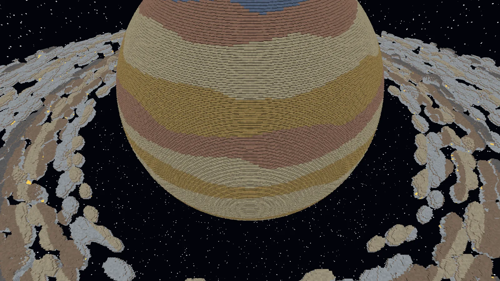
(agrandir l'image)
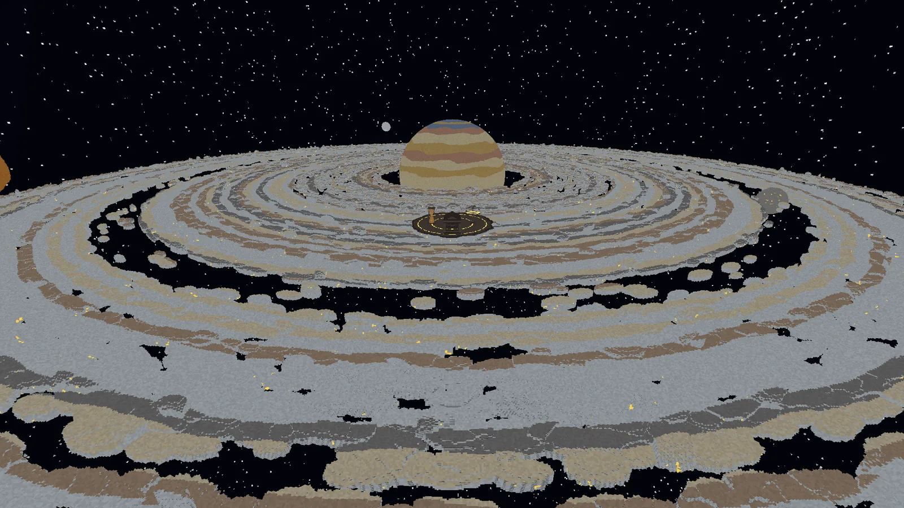
(agrandir l'image)
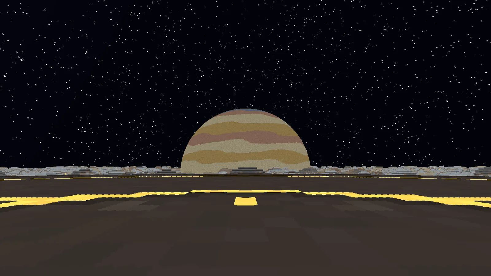
(agrandir l'image)
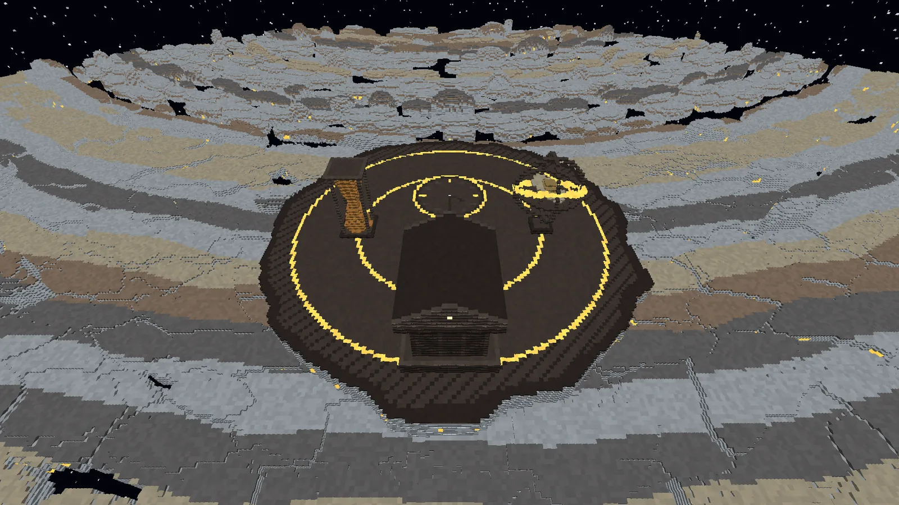
(agrandir l'image)
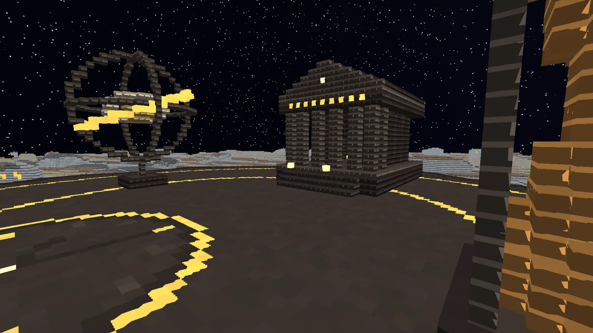
(agrandir l'image)
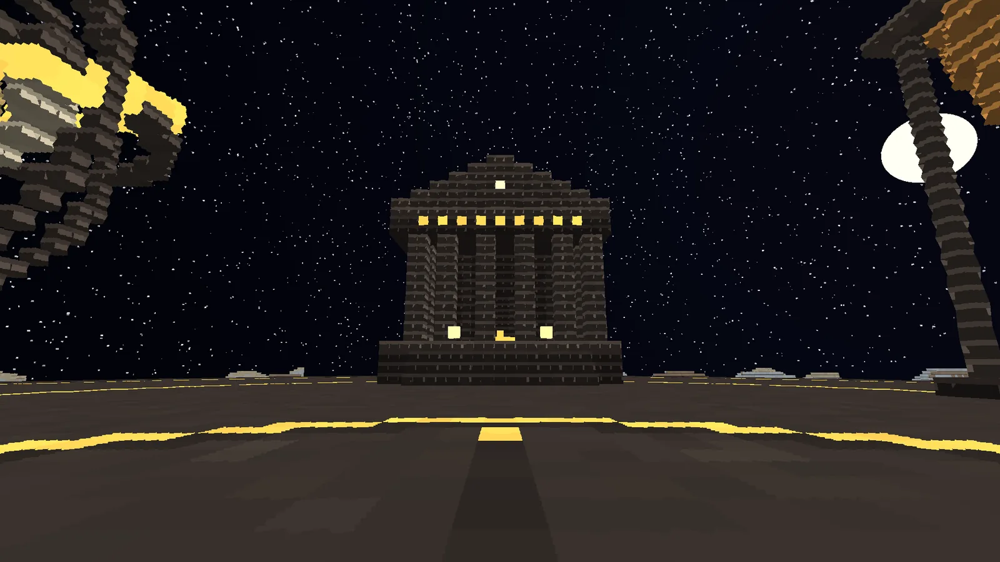
(agrandir l'image)
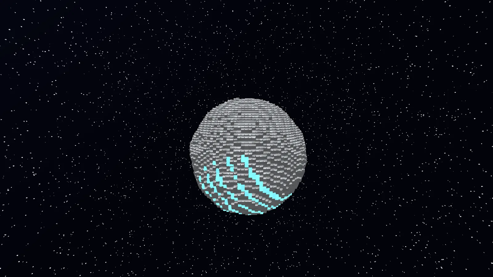
(agrandir l'image)
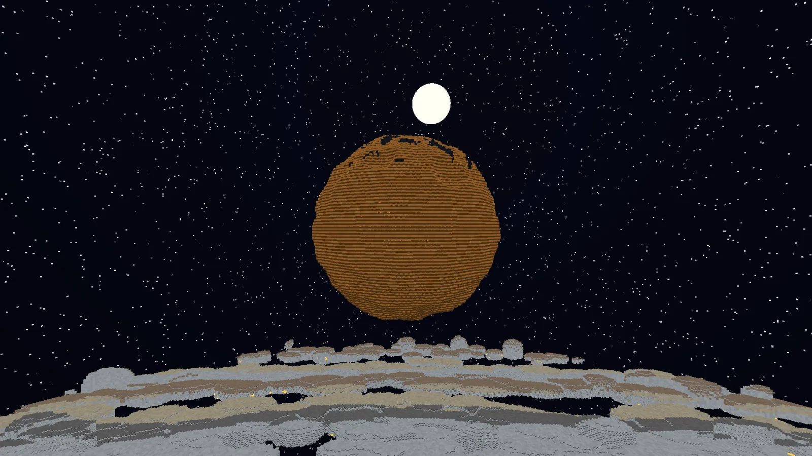
(agrandir l'image)
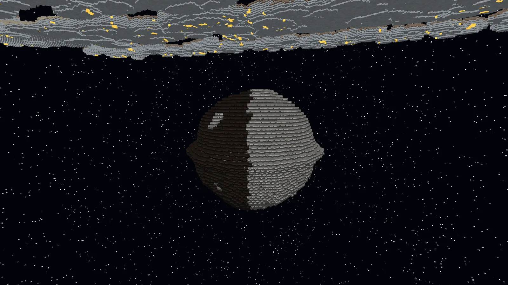
(agrandir l'image)
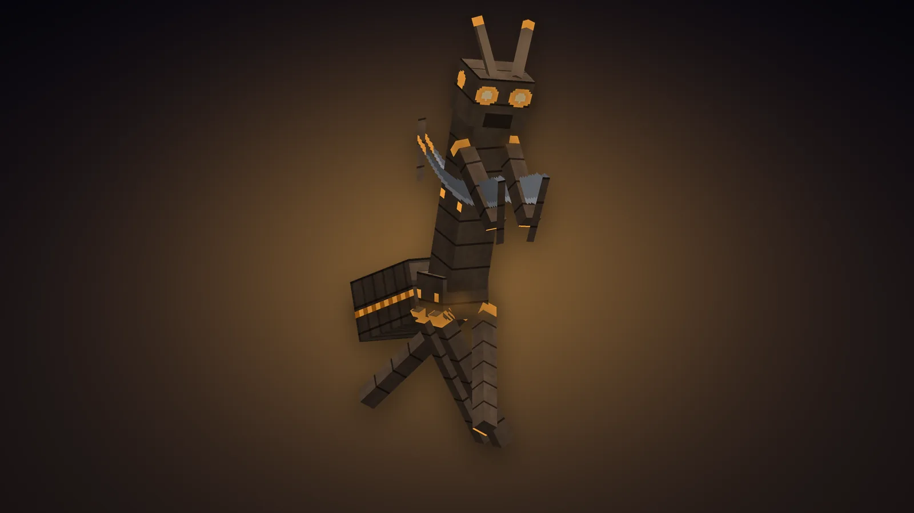
(agrandir l'image)
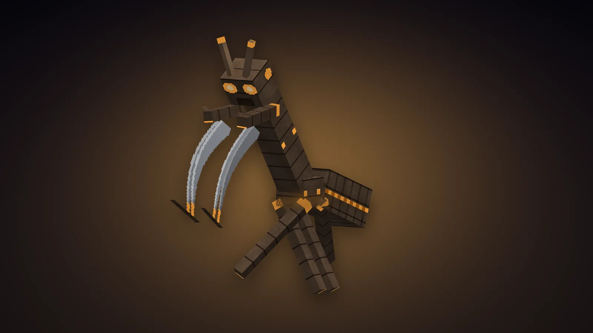
(agrandir l'image)
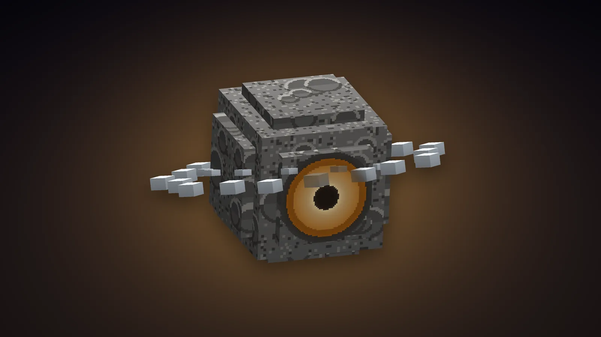
(agrandir l'image)Le voyage
- Les mêmes règles que pour les autres planètes : une fois par jour de jeu, cinq minutes au plus, le compte à rebours en haut à gauche, les invités par [Rejoindre], la touche divine pour rentrer plus tôt.
- On y pèse un peu plus de la moitié du poids terrestre : assez pour sauter d'un bloc de glace à l'autre. Tomber entre les glaces n'est pas grave : l'espace vous ramène au temple.
- L'arrivée : sur la place du Temple de Saturne, au milieu d'un grand cadran d'horloge dessiné dans le dallage, face à la planète qui se lève au-dessus des anneaux.
La planète
Elle est la même dans tous les mondes. Les anneaux sont dans le plan de l'équateur (Y 150) ; des rayures concentriques de glace blanche, crème et crépusculaire les traversent.
| Lieu | Où (x, z) | Ce qu'on y trouve |
|---|---|---|
| Le Temple de Saturne | 0, -470 (Y 161) | L'arrivée, sur une mesa de glace dix blocs au-dessus de l'anneau. Le temple romain du Forum, celui qui gardait le trésor : podium, escalier, colonnes, fronton marqué d'un cadran, et dans la cella le trésor d'adamas. Sur la place, la sphère armillaire avec Saturne et son anneau au milieu, et un sablier plus haut qu'une maison |
| Saturne | 0, 0 | Une sphère de brumes champagne, miel, rose et azur. Au pôle nord, l'Hexagone et son vortex. Sous la coquille, creuse, le Cœur de Saturne brûle - pour qui ose creuser |
| L'anneau C | 190 à 390 blocs du centre | Des débris clairsemés : on y saute de glaçon en glaçon |
| L'anneau B | 400 à 650 | Le plus brillant, le plus dense : de vraies banquises qui se touchent presque, avec des icebergs |
| La division de Cassini | 650 à 715 | Le grand vide entre les anneaux. Mimas y flotte |
| L'anneau A et la lacune d'Encke | 715 à 910 ; la lacune à 866 | De grandes plaques ; dans la lacune tourne la petite Pan |
| L'anneau F | 925 à 945 | Un mince ruban de glace au bord de tout |
| Mimas | -618, -288 | Une lune grise posée dans la division de Cassini, un cratère géant tourné vers la planète |
| Pan | 750, 433 | Une lune en forme de noix, avec son arête, dans la lacune d'Encke |
| Titan | 560, -560 (haut) | La grande lune orange, ses lacs de méthane noir gelé au sommet |
| Encelade | 300, 760 (haut) | Une lune de glace blanche ; au pôle sud, les rayures de tigre bleues, d'où jaillissent des geysers de glace |
| Japet | -760, 350 (bas) | Une lune à deux visages, l'un clair, l'autre noir comme le goudron, ceinte d'une muraille à l'équateur |
Les créatures
Deux, et elles seules. La planète les fait venir autour de chaque visiteur - en créatif aussi - jamais sur la place du temple : six Moissonneurs et six Bergers au plus, aucun en Paisible.
| Créature | Vie | Dégâts | Ce qu'elle fait | Butin |
|---|---|---|---|---|
| Moissonneur | 60 | 9 (faux) | Une mante de trois blocs, chitine brune, articulations d'ambre, deux faux pour pattes avant : la moisson dont Saturne était le dieu. Toutes les 7 à 10 s, de loin, il passe à travers le temps : il disparaît dans un pli de lumière et réapparaît derrière vous, faux levées. Ce qu'il coupe, il le vieillit : Lenteur, Fatigue, Faim pendant 5 secondes. Aucune chute ne le blesse. | 1 à 3 adamas bruts |
| Berger des anneaux | 40 | 5 (éclat) | Une des petites lunes qui gardent les anneaux, devenue vivante : un rocher de deux blocs à l'œil d'ambre, ceint de son propre anneau d'éclats de glace qui tourne. Il flotte au-dessus des vides, tourne autour de sa proie et lance des éclats de glace trois par trois (Lenteur II). De temps en temps il ouvre son puits de gravité : tout joueur proche est attiré vers lui - au bord d'une glace, si c'est là qu'il se tenait. | 1 à 2 adamas bruts |
Le Butin augmente l'adamas. Tués par un joueur, ils ont aussi 5 % de chances de laisser une Cuirasse ou des Solerets des Éons : c'est la seule façon de les avoir.
L'adamas, et le temps
L'adamas, l'inbrisable des vieux poèmes, dort dans la glace épaisse des anneaux et dans les lunes : un minerai où luisent des cristaux d'ambre. Il donne de l'adamas brut, gris, sa lumière pas encore allumée : il ne se cuit pas. Le temps le fait mûrir : porté sur Saturne, dans l'inventaire, il vieillit tout seul, une barre ambrée sous son icône le montre, et au bout d'une minute il devient adamas. Ailleurs, le temps ne le touche pas : il garde son avance.
Les blocs
| Bloc | Où | Outil |
|---|---|---|
| Glace des anneaux (blanche, crème, crépusculaire), Poussière d'anneau | Les anneaux | Pioche ; pelle |
| Minerai d'adamas | Dans la glace épaisse et les lunes. Il brille | Pioche en fer |
| Brumes de Saturne (champagne, miel, rose, azur), Orage de l'Hexagone | La planète. Les brumes dérivent lentement | Houe |
| Cœur de Saturne | Au centre de la planète. Lumière maximale | Pioche en fer |
| Régolithe lunaire, Glace d'Encelade, Cryogeyser, Sable de Titan, Lac de méthane gelé, Goudron de Japet | Les lunes. Le cryogeyser crache un panache de glace ; le méthane gelé glisse | Pioche ; pelle |
| Chronolithe, polie, briques, escalier, dalle, muret, sculptée (le sablier et les faux), colonne | Le temple. 8 poussières d'anneau autour d'un adamas brut donnent 8 chronolithes | Pioche |
| Bloc d'adamas | 9 adamas ; base de balise ; lumière 12 | Pioche en fer |
| Verre d'ambre, Sable du temps | La poussière d'anneau cuite ; 4 poussières et un adamas. Le sable luit | Pioche ; pelle |
| Lanterne-sablier | Son sable coule sans jamais s'épuiser. Lumière maximale | Pioche |
| Cadran de Kronos | Ses aiguilles tournent. Clic droit : l'heure de votre monde, et le jour qui reste | Pioche |
La Panoplie des Éons
De l'acier pâle, froid et clair, gravé de fines lignes d'ambre. Autour du heaume tourne un anneau de lumière d'ambre, incliné comme celui de Saturne, sous une couronne de rayons, et la visière luit ; sur la poitrine de la cuirasse, un cadran dont l'aiguille fait le tour en une minute, un sablier de lumière dans le dos ; un sablier pour fermoir à la ceinture des jambières ; et autour des chevilles, deux anneaux qui tournent en sens contraire, plus vite quand on court.
| Pièce | Armure | Durabilité | Comment l'avoir |
|---|---|---|---|
| Heaume des Éons | 3 | 407 | Artisanat : 5 adamas, en casque |
| Cuirasse des Éons | 8 | 592 | Butin des créatures de Saturne : aucune recette |
| Jambières des Éons | 6 | 555 | Artisanat : 7 adamas, en jambières |
| Solerets des Éons | 3 | 481 | Butin des créatures de Saturne : aucune recette |
Chaque pièce : robustesse 3, résistance au recul 15 %, réparable à l'adamas. Les quatre portées ensemble : vous vivez un peu plus vite que le monde - Rapidité et Célérité II - et le monde près de vous un peu plus lentement : les flèches et les boules de feu qui arrivent à 5 blocs de vous se traînent, et l'on s'écarte.
La Harpè et le Sablier de Kronos
d'adamas
chronolithe
chronolithe
Harpè de Kronos
La faucille d'adamas dont Kronos frappa son père : 9 dégâts, assez rapide, 2000 de durabilité. Clic droit : le Temps arrêté. Une sphère de lumière d'ambre s'étend : tout ce qui est hostile à 12 blocs se fige 5 secondes, là où il est - en plein saut s'il sautait. Frappez : vos coups portent, et leur élan leur revient tous d'un coup quand le temps reprend. 20 secondes de recharge.
d'ambre
temps
d'ambre
Sablier de Kronos
Retourné, il rend les 5 dernières secondes : vous voilà là où vous étiez, tourné comme vous l'étiez, et aussi entier - une blessure reçue depuis est effacée, une chute, une brûlure, un pas de trop hors des anneaux aussi. Dans le même monde seulement. 30 secondes de recharge, 32 retournements.
polie
d'ambre
temps
d'ambre
polie
Lanterne-sablier
Lumière 15.